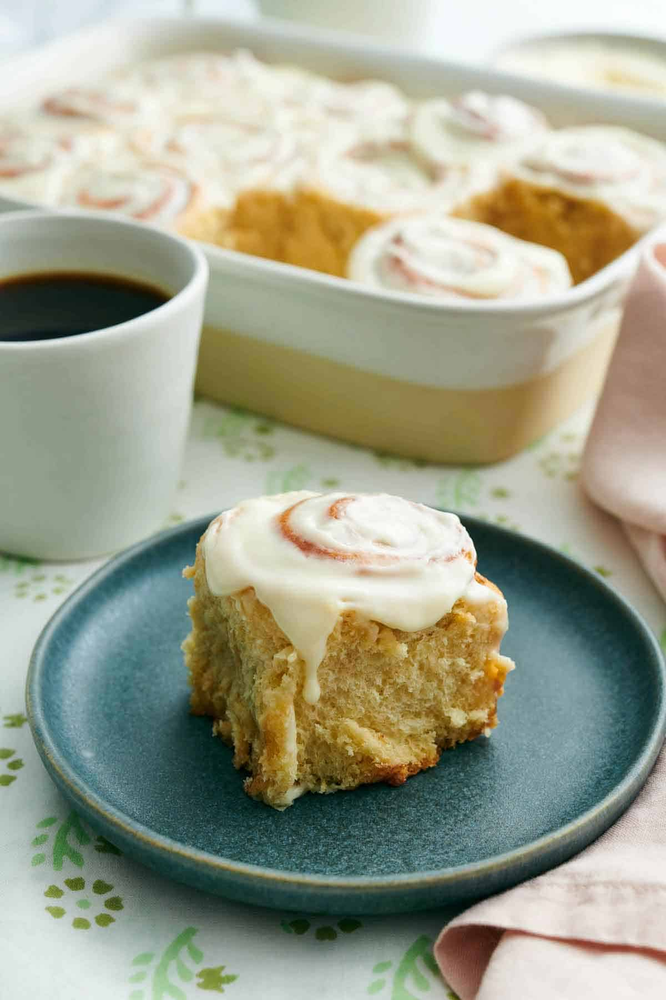

Cinnamon Rolls

Description
A freshly baked tray of Homemade Cinnamon Rolls is a breakfast treat that’s hard to beat! Soft and fluffy dough is swirled with sweet cinnamon and brown sugar and baked to golden brown perfection before being glazed with cream cheese frosting. Make these buns for special occasions like Christmas morning, Saturday brunch, or as a special treat!
Ingredients
For the dough:
- 1 cup warm milk
- 5 tablespoons granulated sugar
- 2 1/4 teaspoons active dry yeast
- 4 2/3 cups all-purpose flour
- 1/3 cup packed light brown sugar
- 1/2 cup unsalted butter
- 1 large egg
- 1 tablespoon vanilla extract
- 1 1/2 teaspoon salt
- 1/2 teaspoon cinnamon
For the filling:
- 6 tablespoons unsalted butter
- 1/2 cup light brown sugar
- 1 1/2 tablespoons cinnamon
For the glaze:
- 4 ounces cream cheese
- 2 tablespoons butter
- 1 teaspoon vanilla extract
- pinch of salt
- 2 cups powdered sugar
- 1 to 2 tablespoons milk
Instructions
For the dough:
- In a large mixing bowl or the bowl of a stand mixer fitted with the dough hook attachment, stir together the warm milk, granulated sugar, and yeast. Let stand until foamy, about 5 minutes.
- Add the remaining ingredients. Begin mixing on low speed until the mixture starts to come together. Increase the speed to medium-low and continue kneading until the dough is springy and tacky to the touch but doesn’t stick to your fingers, 8 to 10 minutes.
- Transfer the dough to a lightly oiled large bowl. Cover and let rise in a warm place (about 75F) until doubled in size, about 1½ to 2 hours.
- Lightly grease a 9×13-inch baking pan with butter or baking spray
- Turn out the dough onto a well-floured surface. Roll the dough into roughly a 12×24-inch rectangle.
For the filling:
- Spread the butter onto the dough in a thin and even layer, leaving a ½-inch border down one long side of the dough. (make sure your butter is very soft! If it’s still firm, microwave it in 5-second increments until easily spreadable.)
- n a small bowl, stir together the sugar and cinnamon. Sprinkle the cinnamon sugar all over the butter.
- Starting at one long end opposite the unbuttered border, roll up the dough into a tight log. Cut the log into 12 equal pieces (about 2 inches wide) using a sharp serrated knife or unflavored dental floss.
- Place the rolls cut side down evenly spaced in the prepared baking dish. Loosely cover and let rise in a warm place until almost doubled in size, about 1 hour.
- Preheat the oven to 350F while rising.
- Uncover and bake for 20 to 25 minutes or until lightly browned on top. Place on a wire rack to cool.
For the glaze:
- While the rolls are baking, combine the cream cheese, butter, vanilla and salt in a medium mixing bowl. Beat together on medium speed until smooth. Sift in the powdered sugar and beat on low speed until well combined. For a thinner consistency, beat in 1 to 2 tablespoons of milk.
- When the rolls are right out of the oven, spread a third of the glaze over the hot rolls. Let cool for 5 minutes, then spread the remaining glaze on top. The rolls are best enjoyed warm but can be covered and stored at room temperature for 2 days.
Home